List ADT & Linked Lists in C++
Liting Zhang
University of West Florida
Outline
List ADT: operations and meaning (implementation-independent)
Singly-linked list: nodes,
head/tail, invariantsCore operations: append, prepend, search, insert-after, remove-after, remove-by-value
Traversal: iterative and recursive
Doubly-linked lists:
prevpointer + updated pointer rulesCircular lists: stopping condition changes
Complexity + common pointer bugs
Learning goals
After this lecture, you should be able to
Explain what the List ADT specifies (and what it does not)
Draw linked lists correctly and state key invariants
Identify which pointers must change for each list operation
Reason about empty / one-node / middle / tail cases
Compare singly vs doubly linked lists (trade-offs)
Big idea
The List ADT tells us what a list can do. A linked list decides how to do it using nodes and pointers.
ADT = behavior + operations (no storage details)
Implementation = nodes + pointers + invariants
Most bugs come from missing special cases (empty / tail updates / deleting nodes)
Always draw the pointer picture first, then write code.
What is a List ADT?
Definition: an ordered collection of elements.
There is a concept of “first”, “second”, … “last”
The ADT defines operations and what they mean
The ADT does not force arrays or pointers
Common list operations
Append(x): add
xto the endPrepend(x): add
xto the frontInsertAfter(node, x): add
xafter a given nodeRemoveAfter(node): remove after node (or remove head if node is null)
Remove(x): remove first occurrence of
xContains(x): return true/false
Performance depends on implementation.
Implementation choices
Dynamic array: fast indexing, expensive middle insert/delete
Linked list: flexible insert/delete, slower indexing/search
Singly-Linked List (implementation of List ADT)
A singly-linked list is a concrete way to implement a list ADT.
-
Each node has:
data (the value)
next (pointer to the next node)
-
The list has:
head pointer (first node)
tail pointer (last node)
The list grows/shrinks dynamically.
Each node knows only about the next one.
Cannot directly access elements by index.
Visual model + invariants
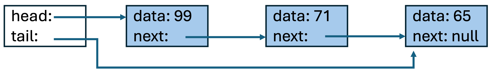
Empty:
head == nullptrandtail == nullptrNon-empty:
tail->next == nullptrTraversal follows
nextpointers starting fromhead
Node class (typical)
template <typename T>
class Node {
T data;
Node<T>* next;
public:
Node() : next(nullptr) {}
Node(const T& data) : data(data), next(nullptr) {}
};Linked List Class (typical)
The LinkedList object represents the whole list.
template <typename T>
class LinkedList {
private:
Node<T>* head;
Node<T>* tail;
public:
LinkedList() : head(nullptr), tail(nullptr) {}
void Append(Node<T>* newNode);
void Prepend(Node<T>* newNode);
Node<T>* Search(const T& value);
};Noderepresents one element in the list.LinkedListrepresents the whole list.headpoints to the first node;tailpoints to the last node.List operations are methods of the
LinkedListclass.
Append (add to end)
Append places a new node at the end of the list.
Connect the old tail to the new node, then move
tail.For an empty list, both
headandtailpoint to the new node.
O(1) with a tail pointer.
template <typename T>
void Append(Node<T>* newNode) {
if (newNode == nullptr) return;
// Ensure the new node does not carry an old link
newNode->next = nullptr;
// Case 1: empty list
if (head == nullptr) {
head = newNode;
tail = newNode;
return;
}
// Case 2: non-empty list
tail->next = newNode;
tail = newNode;
}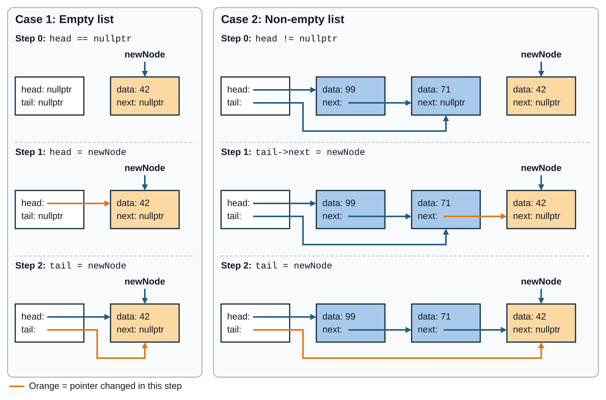
Prepend (add to front)
Prepend places a new node before the first node.
Point the new node to the old head, then move
head.If the list was empty, update
tailtoo.
O(1): no traversal is needed.
template <typename T>
void Prepend(Node<T>* newNode) {
if (newNode == nullptr) return;
// New node becomes the first node
newNode->next = head;
head = newNode;
// If the list was empty before, head and tail should both point to newNode
if (tail == nullptr) {
tail = newNode;
}
}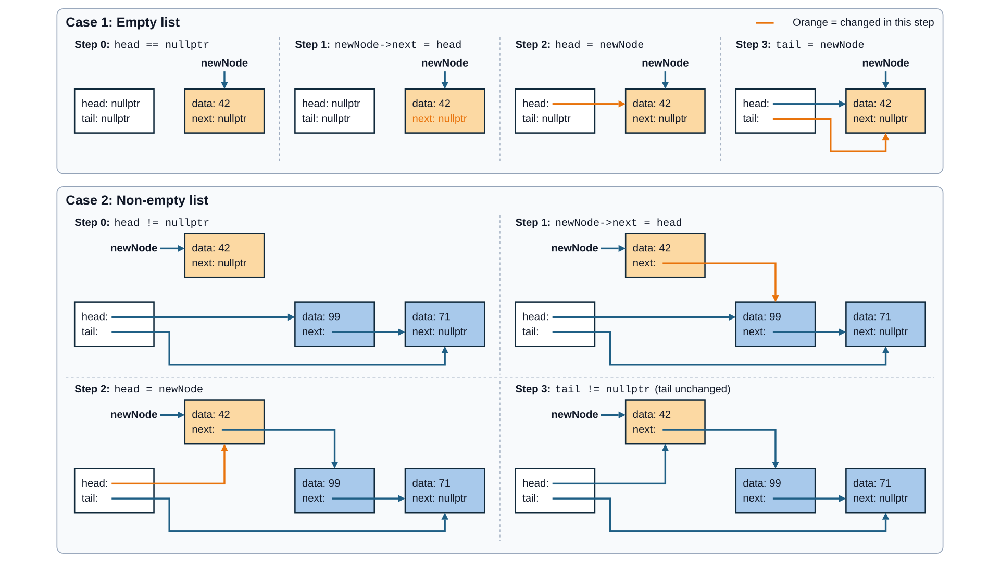
Search / Contains
Search finds the first node containing the target value.
Start at
head; compare each value and follownext.Return the matching node, or
nullptrif absent; Contains returns true or false.
O(n) in the worst case; the list does not change.
template <typename T>
Node<T>* Search(const T& target) const {
Node<T>* current = head;
while (current != nullptr) {
if (current->data == target) {
return current; // Found
}
current = current->next; // Move forward
}
return nullptr; // Not found
}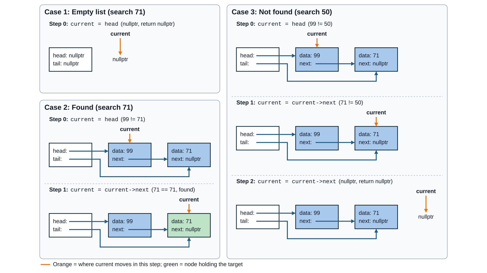
InsertAfter (given a node)
Insert a new node after a given node.
Set
newNode->nextbefore changing the current link.After the tail, move
tailto the new node.Empty list: make the new node both head and tail.
O(1) when the current node is already known.
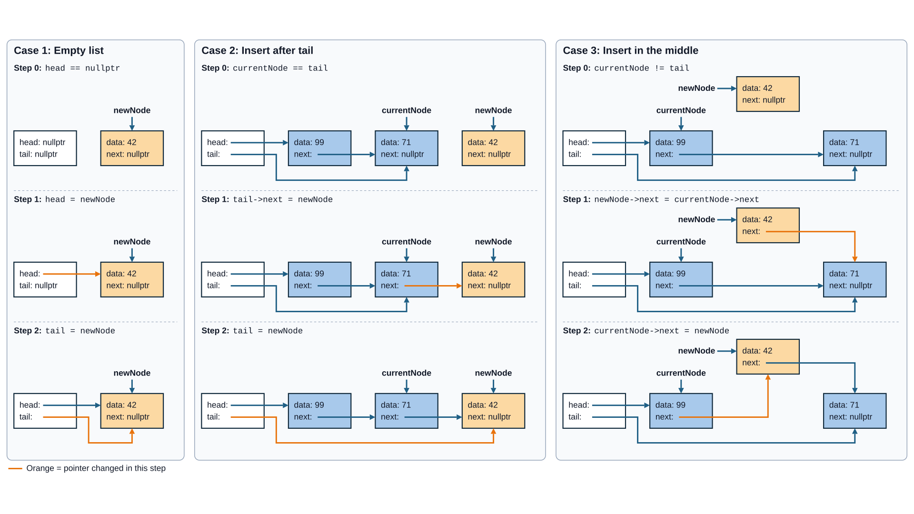
void InsertAfter(Node<T>* currentNode, Node<T>* newNode) {
if (newNode == nullptr) return;
// Make sure the node doesn't accidentally keep an old link.
newNode->next = nullptr;
// Case 1: empty list
if (head == nullptr) {
head = newNode;
tail = newNode;
return;
}
// If list is not empty, caller must provide a valid currentNode.
if (currentNode == nullptr) return;
// Case 2: insert after tail
if (currentNode == tail) {
tail->next = newNode;
tail = newNode;
return;
}
// Case 3: insert in the middle
newNode->next = currentNode->next;
currentNode->next = newNode;
};RemoveAfter
Delete the node after a given node.
Bypass the node, then delete it.
Removing the tail: move
tailto the current node.Null argument: remove head; if it was the only node, clear
tail.
O(1); no successor means no removal.
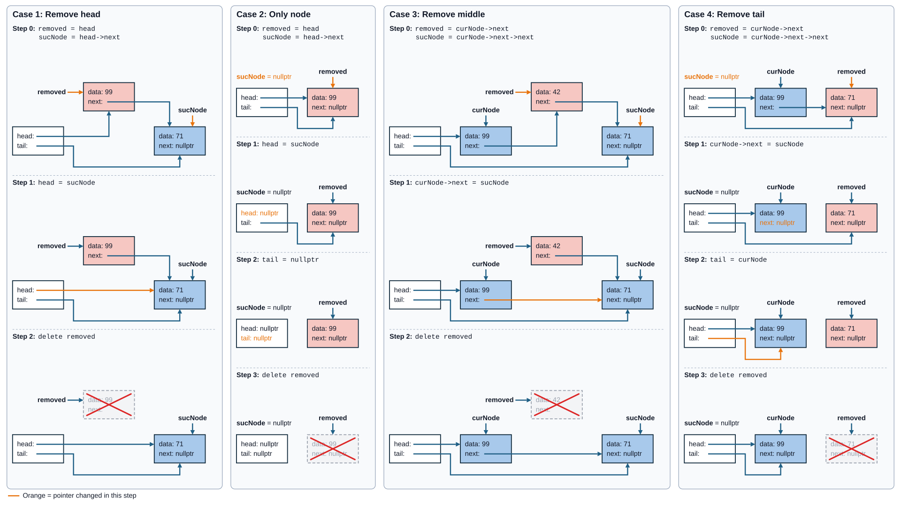
template <typename T>
void RemoveAfter(Node<T>* curNode) {
// Special case: remove head
if (curNode == nullptr) {
if (head == nullptr) return; // empty list
Node<T>* removed = head;
Node<T>* sucNode = head->next; // successor of head
head = sucNode;
if (sucNode == nullptr) { // removed last item
tail = nullptr;
}
delete removed;
return;
}
// Remove node AFTER curNode (only if it exists)
if (curNode->next != nullptr) {
Node<T>* removed = curNode->next;
Node<T>* sucNode = curNode->next->next; // successor after removed
curNode->next = sucNode;
if (sucNode == nullptr) { // removed tail
tail = curNode;
}
delete removed;
}
}Remove(value)
Delete the first occurrence of a target value.
Track the current node and its predecessor.
Use
RemoveAfter(prevNode)to delete the match.Return true if removed, false if absent.
O(n): searching requires traversal.
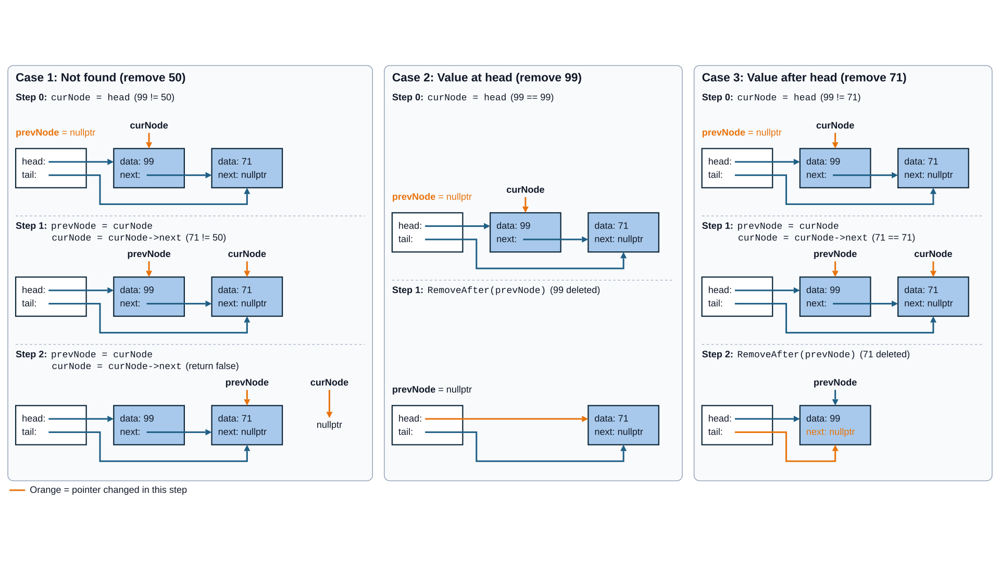
template <typename T>
bool RemoveValue(const T& targetValue) {
Node<T>* curNode = head;
Node<T>* prevNode = nullptr;
// Find the first node whose data == targetValue
while (curNode != nullptr && curNode->data != targetValue) {
prevNode = curNode;
curNode = curNode->next;
}
// Not found
if (curNode == nullptr) {
return false;
}
// curNode is the node to remove.
// Our RemoveAfter convention:
// RemoveAfter(nullptr) removes head
// RemoveAfter(prevNode) removes prevNode->next
RemoveAfter(prevNode);
return true;
}Traversal (iterative)
Traversal visits every node in order without changing the list.
Start at
head, process the value, and follownext.Stop at
nullptr; an empty list produces no output.
O(n) time and O(1) extra space.
template <typename T>
void Traverse(Node<T>* head) {
Node<T>* cur = head;
while (cur != nullptr) {
std::cout << cur->data << " ";
cur = cur->next;
}
}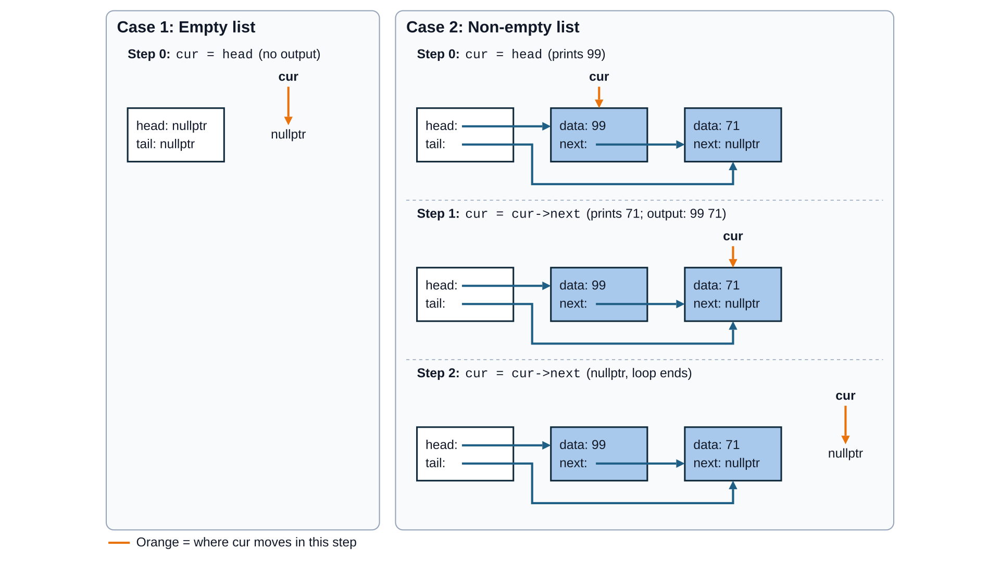
Traversal (recursive)
Recursive traversal processes one node, then visits the rest of the list.
Base case: a null node ends the recursion.
Print the current value before calling the function on
node->next.
O(n) time and O(n) call-stack space.
template <typename T>
void TraverseRec(Node<T>* node) {
if (node == nullptr) return;
std::cout << node->data << " ";
TraverseRec(node->next);
}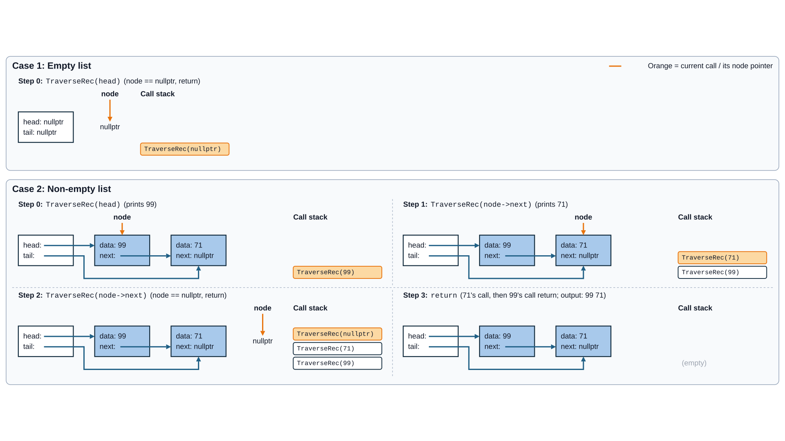
What changes?
Each node stores both
nextandprevBackward traversal becomes possible
Insert/remove in the middle updates two directions
Trade-off: more memory and more pointer updates
Visual model + invariants
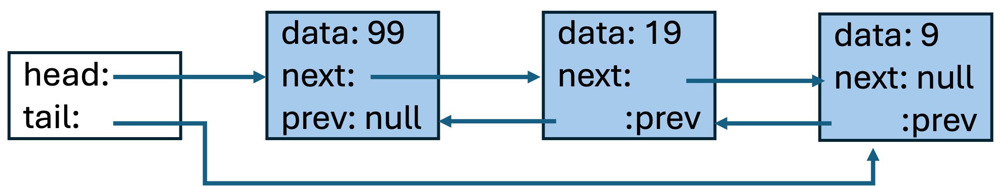
Empty:
head == nullptrandtail == nullptrNon-empty:
head->prev == nullptrandtail->next == nullptrFor any middle node
x:x->next->prev == xandx->prev->next == x
DNode class (typical)
template <typename T>
class DNode {
public:
T data;
DNode<T>* next;
DNode<T>* prev;
DNode() : data(), next(nullptr), prev(nullptr) {}
DNode(const T& value) : data(value), next(nullptr), prev(nullptr) {}
};InsertAfter (given a node)
Connect the new node in both directions.
Point the new node to its predecessor and successor.
Update the neighbors: predecessor’s
next, successor’sprev.Empty list or insertion after tail: update head or tail too.
O(1) when the current node is already known.
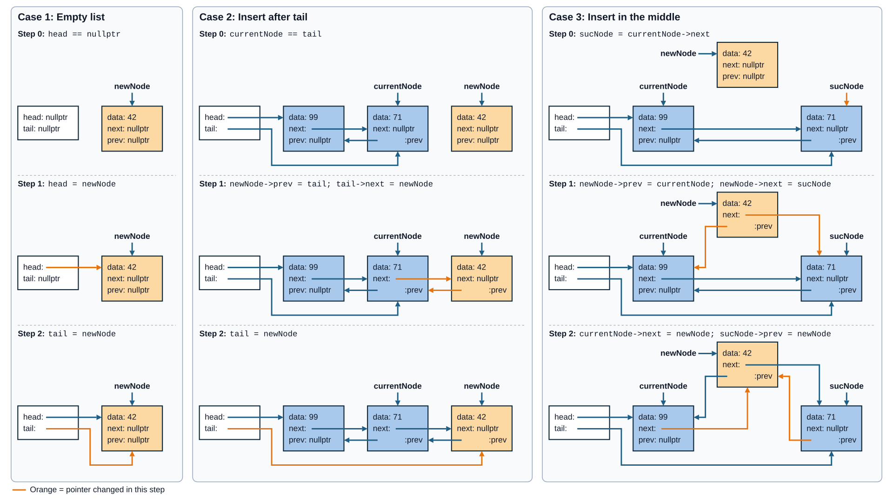
template <typename T>
void InsertAfter(DNode<T>* currentNode, DNode<T>* newNode) {
if (newNode == nullptr) return;
// Detach any old links (safety for teaching examples)
newNode->next = nullptr;
newNode->prev = nullptr;
// Case 1: empty list
if (head == nullptr) {
head = newNode;
tail = newNode;
return;
}
// Non-empty list: caller must provide a valid currentNode
if (currentNode == nullptr) return;
// Case 2: insert after tail
if (currentNode == tail) {
newNode->prev = tail;
tail->next = newNode;
tail = newNode;
return;
}
// Case 3: insert in the middle
DNode<T>* sucNode = currentNode->next;
newNode->prev = currentNode;
newNode->next = sucNode;
currentNode->next = newNode;
sucNode->prev = newNode;
}RemoveNode (given a node)
Delete a known node from a doubly-linked list.
Reconnect its neighbors before deleting it.
At head or tail, update the boundary and clear its outside link.
Only node: clear both
headandtail.
O(1) when the target node is already known.
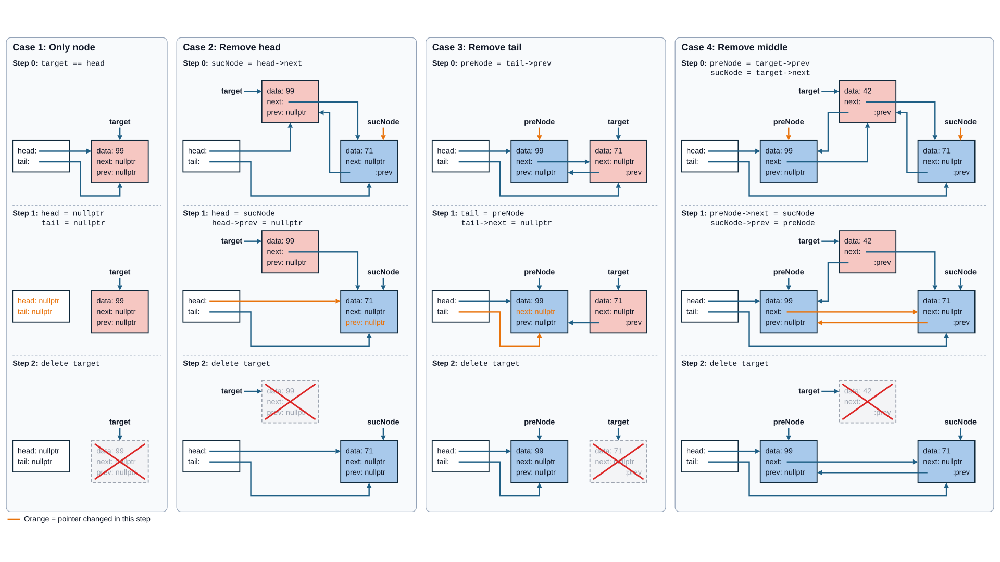
template <typename T>
void RemoveNode(DNode<T>* target) {
if (target == nullptr) return;
if (head == nullptr) return;
// Case 1: removing the only node
if (target == head && target == tail) {
head = nullptr;
tail = nullptr;
delete target;
return;
}
// Case 2: remove head
if (target == head) {
DNode<T>* sucNode = head->next;
head = sucNode;
head->prev = nullptr;
delete target;
return;
}
// Case 3: remove tail
if (target == tail) {
DNode<T>* preNode = tail->prev;
tail = preNode;
tail->next = nullptr;
delete target;
return;
}
// Case 4: remove in the middle
DNode<T>* preNode = target->prev;
DNode<T>* sucNode = target->next;
preNode->next = sucNode;
sucNode->prev = preNode;
delete target;
}Traversal (forward)
Forward traversal visits a doubly-linked list from first to last.
Start at
headand follownext.Process each value; stop when the current pointer becomes null.
O(n) time and O(1) extra space.
template <typename T>
void TraverseForward() const {
DNode<T>* cur = head;
while (cur != nullptr) {
std::cout << cur->data << " ";
cur = cur->next;
}
}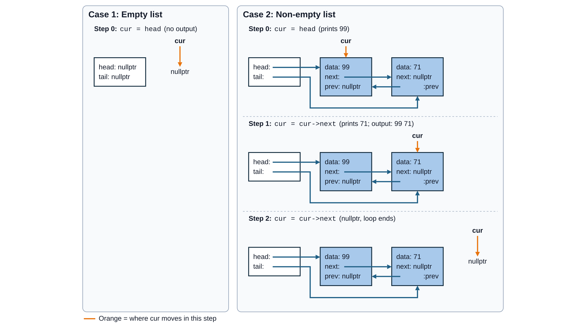
Traversal (backward)
Backward traversal visits a doubly-linked list from last to first.
Start at
tailand followprev.Process each value; stop when the current pointer becomes null.
O(n) time and O(1) extra space.
template <typename T>
void TraverseBackward() const {
DNode<T>* cur = tail;
while (cur != nullptr) {
std::cout << cur->data << " ";
cur = cur->prev;
}
}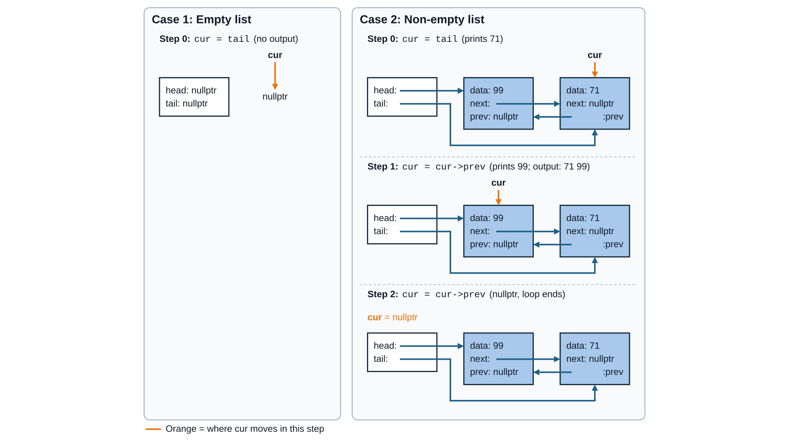
Circular singly-linked list
Tail points back to head (no
nullptrat the end)Traversal stops when you return to the starting node
head
|
v
+----+ +----+ +----+
| 9 |--> | 19 |--> | 99 |
+----+ +----+ +----+
^ |
|____________________|Typical time complexities
Append: O(1) with
tail, otherwise O(n)Prepend: O(1)
Search / Contains: O(n)
InsertAfter (given node pointer): O(1)
RemoveAfter (given node pointer): O(1)
Remove(value): O(n)
Pointer bug checklist
Missing empty-list case (head/tail updates)
Removed last node but forgot to update
tailOverwrote
nextbefore saving the old successorMemory leak: removed node not deleted
Dangling pointer: used node after deletion